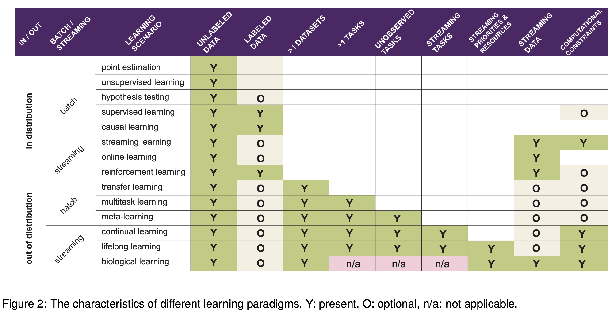
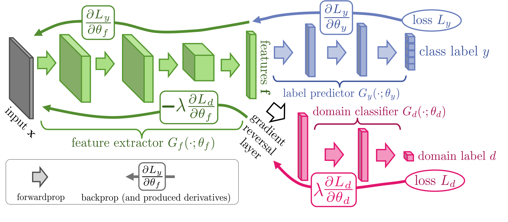

transfer learning
view markdownSee also notes on causal inference for some close connections.
overviews

(from this paper)- for neural networks the basic options for transfer-learning are:
- finetuning the entire model
- learn a linear layer from features extracted from a single layer (i.e. linear probing)
- this includes just finetuning the final layer
- finetune on all the layers
- Head2Toe: Utilizing Intermediate Representations for Better Transfer Learning (evci, et al. 2022) - learn linear layer (using group-lasso) on features extracted from all layers
- Adapters provide a parameter-efficient alternative to full finetuning in which we can only finetune lightweight neural network layers on top of pretrained weights. Parameter-Efficient Transfer Learning for NLP, AdapterHub: A Framework for Adapting Transformers
domain adaptation algorithms
Domain test bed available here, for generalizating to new domains (i.e. performing well on domains that differ from previous seen data)
- Empirical Risk Minimization (ERM, Vapnik, 1998) - standard training
- Invariant Risk Minimization (IRM, Arjovsky et al., 2019) - learns a feature representation such that the optimal linear classifier on top of that representation matches across domains.
- distributional robust optimization
- instead of minimizing training err, minimize maximum training err over different perturbations
- Group Distributionally Robust Optimization (GroupDRO, Sagawa et al., 2020) - ERM + increase importance of domains with larger errors (see also papers from Sugiyama group e.g. 1, 2)
- minimize error for worst group
- Variance Risk Extrapolation (VREx, Krueger et al., 2020) - encourages robustness over affine combinations of training risks, by encouraging strict equality between training risks
- Interdomain Mixup (Mixup, Yan et al., 2020) - ERM on linear interpolations of examples from random pairs of domains + their labels
- Marginal Transfer Learning (MTL, Blanchard et al., 2011-2020) - augment original feature space with feature vector marginal distributions and then treat as a supervised learning problem
- Meta Learning Domain Generalization (MLDG, Li et al., 2017) - use MAML to meta-learn how to generalize across domains
- learning more diverse predictors
- Representation Self-Challenging (RSC, Huang et al., 2020) - adds dropout-like regularization to important features, forcing model to depend on many features
- Spectral Decoupling (SD, Pezeshki et al., 2020) - regularization which forces model to learn more predictive features, even when only a few suffice
- embedding prior knowledge
- Style Agnostic Networks (SagNet, Nam et al., 2020) - penalize style features (assumed to be spurious)
- Penalizing explanations (Rieger et al. 2020) - penalize spurious features using prior knowledge
- Domain adaptation under structural causal models (chen & buhlmann, 2020)
- make clearer assumptions for domain adaptation to work
- introduce CIRM, which works better when both covariates and labels are perturbed in target data
- kernel approach (blanchard, lee & scott, 2011) - find an appropriate RKHS and optimize a regularized empirical risk over the space
- In-N-Out (xie…lang, 2020) - if we have many features, rather than using them all as features, can use some as features and some as targets when we shift, to learn the domain shift
domain invariance
key idea: want repr. to be invariant to domain label

- same idea is used to learn fair representations, but domain label is replaced with sensitive attribute
- Domain Adversarial Neural Network (DANN, Ganin et al., 2015)
- Conditional Domain Adversarial Neural Network (CDANN, Li et al., 2018) - variant of DANN matching the conditional distributions across domains, for all labels
- Deep CORAL (CORAL, Sun and Saenko, 2016) - match mean / covariance of feature distrs
- Maximum Mean Discrepancy (MMD, Li et al., 2018)
- adversarial discriminative domain adaptation (ADDA tzeng et al. 2017)
- balancing with importance weighting
- Learning Robust Representations by Projecting Superficial Statistics Out (wang et al. 2019)
dynamic selection
Dynamic Selection (DS) refers to techniques in which, for a new test point, pre-trained classifiers are selected/combined from a pool at test time review paper (cruz et al. 2018), python package
- define region of competence
- clustering
- kNN - more refined than clustering
- decision space - e.g. a model’s classification boundary, internal splits in a model
- potential function - weight all the points (e.g. by their distance to the query point)
- criteria for selection
- individual scores: acc, prob. behavior, rank, meta-learning, complexity
- group: data handling, ambiguity, diversity
- combination
- non-trainable: mean, majority vote, product, median, etc.
- trainable: learn the combination of models
- related: in mixture of experts models + combination are trained jointly
- dynamic weighting: combine using local competence of base classifiers
- Oracle baseline - selects classifier predicts correct label, if such a classifier exists
test-time adaptation
- test-time adaptation
- test-time augmentation
- batch normalization (AdaBN)
-
label shift estimation (BBSE) - $p(y)$ shifts but $P(x y)$ does not - rotation prediction (sun et al. 2020)
- entropy minimization (test-time entropy minimization, TENT, wang et al. 2020) - optimize for model confidence (entropy of predictions), using only norm. statistics and channel-wise affine transformations
- combining train-time and test-time adaptation
- Adaptive Risk Minimization (ARM, Zhang et al., 2020) - combines groups at training time + batches at test-time
- meta-train the model using simulated distribution shifts, which is enabled by the training groups, such that it exhibits strong post-adaptation performance on each shift
- Adaptive Risk Minimization (ARM, Zhang et al., 2020) - combines groups at training time + batches at test-time
adv attacks
- Adversarial Attacks and Defenses in Images, Graphs and Text: A Review (xu et al. 2019)
- attacks
- fast gradient step method - keep adding gradient to maximize noise (limit amplitude of pixel’s channel to stay imperceptible)
- Barrage of Random Transforms for Adversarially Robust Defense (raff et al. 2019)
- DeepFool: a simple and accurate method to fool deep neural networks (Moosavi-Dezfooli et. al 2016)
- defenses
- Adversarial training - training data is augmented with adv examples (Szegedy et al., 2014b; Madry et al., 2017; Tramer et al., 2017; Yu et al., 2019)
- \[\min _{\boldsymbol{\theta}} \frac{1}{N} \sum_{n=1}^{N} \operatorname{Loss}\left(f_{\theta}\left(x_{n}\right), y_{n}\right)+\lambda\left[\max _{\|\delta\|_{\infty} \leq \epsilon} \operatorname{Loss}\left(f_{\theta}\left(x_{n}+\delta\right), y_{n}\right)\right]\]
- this perspective differs from “robust statistics” which is usually robustness against some kind of model misspecification/assumptions, not to distr. shift
- robust stat usually assumes a generative distr. as well
- still often ends up with the same soln (e.g. ridge regr. corresponds to certain robusteness)
- Stochasticity: certain inputs or hidden activations are shuffled or randomized (Xie et al., 2017; Prakash et al., 2018; Dhillon et al., 2018)
- Preprocessing: inputs or hidden activations are quantized, projected into a different representation or are otherwise preprocessed (Guo et al., 2017; Buckman et al., 2018; Kabilan et al., 2018)
- Manifold projections: an input sample is projected in a lower dimensional space in which the neural network has been trained to be particularly robust (Ilyas et al., 2017; Lamb et al., 2018)
- Regularization in the loss function: an additional penalty term is added to the optimized objective function to upper bound or to approximate the adversarial loss (Hein and Andriushchenko, 2017; Yan et al., 2018)
- constraint
- robustness as a constraint not a loss (Constrained Learning with Non-Convex Losses (chamon et al. 2021))
- \[\begin{aligned} \min _{\boldsymbol{\theta}} & \frac{1}{N} \sum_{n=1}^{N} \operatorname{Loss}\left(f_{\theta}\left(x_{n}\right), y_{n}\right) \\ \text { subject to } & \frac{1}{N} \sum_{n=1}^{N}\left[\max _{\|\delta\|_{\infty} \leq \epsilon} \operatorname{Loss}\left(f_{\theta}\left(\boldsymbol{x}_{n}+\delta\right), y_{n}\right)\right] \leq c \end{aligned}\]
- when penalty is convex, these 2 problems are the same
- robustness as a constraint not a loss (Constrained Learning with Non-Convex Losses (chamon et al. 2021))
- a possible defense against adversarial attacks is to solve the anticausal classification problem by modeling the causal generative direction, a method which in vision is referred to as analysis by synthesis (Schott et al., 2019)
- Adversarial training - training data is augmented with adv examples (Szegedy et al., 2014b; Madry et al., 2017; Tramer et al., 2017; Yu et al., 2019)
- robustness vs accuracy
- robustness may be at odds with accuracy (tsipiras…madry, 2019)
- Precise Tradeoffs in Adversarial Training for Linear Regression (javanmard et al. 2020) - linear regression with gaussian features
- use adv. training formula above
- Theoretically Principled Trade-off between Robustness and Accuracy (Zhang, …, el ghaoui, Jordan, 2019)
- adversarial examples
- Decision Boundary Analysis of Adversarial Examples (He, Li, & Song 2019)
- Natural Adversarial Examples (Hendrycks, Zhao, Basart, Steinhardt, & Song 2020)
- Image-Net-Trained CNNs Are Biased Towards Texture (Geirhos et al. 2019)
- adversarial transferability
- Transferability in Machine Learning: from Phenomena to Black-Box Attacks using Adversarial Samples (papernot, mcdaniel, & goodfellow, 2016)
- Ensemble Adversarial Training: Attacks and Defenses (tramer et al. 2018)
- Improving Adversarial Robustness via Promoting Ensemble Diversity (pang et al. 2019)
- encourage diversity in non-maximal predictions
- robustness
- smoothness yields robustness (but can be robust without smoothness)
- margin idea - data points close to the boundary are not robust
- we want our boundary to go through regions where data is scarce